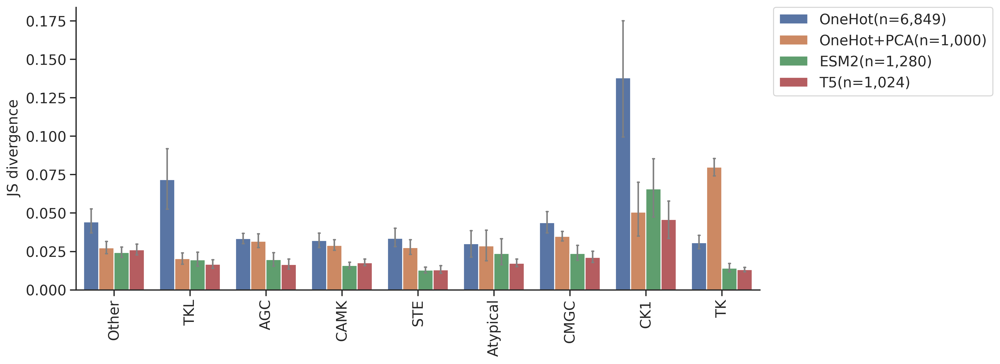
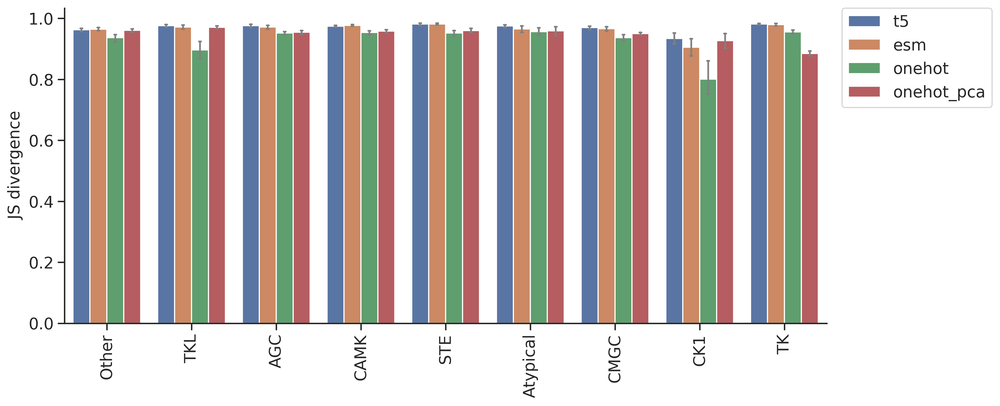

import numpy as np, pandas as pd
import os, random
from katlas.data import *
from katlas.train import *
from fastai.vision.all import *
from katlas.dnn import *DL training: Feature comparison on CNN model
Setup
seed_everything()def_device'cuda'Data
df_t5=pd.read_parquet('train/pspa_t5.parquet').reset_index()
df_esm=pd.read_parquet('train/pspa_esm.parquet').reset_index()
df_onehot = pd.read_parquet('train/pspa_onehot.parquet').reset_index()
df_onehot_pca = pd.read_parquet('train/pspa_onehot_pca.parquet').reset_index()(df_onehot['index'] == df_esm['index']).value_counts()index
True 368
Name: count, dtype: int64(df_t5['index'] == df_esm['index']).value_counts()index
True 368
Name: count, dtype: int64t5_col = df_t5.columns[df_t5.columns.str.startswith('T5_')]t5_colIndex(['T5_0', 'T5_1', 'T5_2', 'T5_3', 'T5_4', 'T5_5', 'T5_6', 'T5_7', 'T5_8',
'T5_9',
...
'T5_1014', 'T5_1015', 'T5_1016', 'T5_1017', 'T5_1018', 'T5_1019',
'T5_1020', 'T5_1021', 'T5_1022', 'T5_1023'],
dtype='object', length=1024)esm_col = df_esm.columns[df_esm.columns.str.startswith('esm_')]esm_colIndex(['esm_0', 'esm_1', 'esm_2', 'esm_3', 'esm_4', 'esm_5', 'esm_6', 'esm_7',
'esm_8', 'esm_9',
...
'esm_1270', 'esm_1271', 'esm_1272', 'esm_1273', 'esm_1274', 'esm_1275',
'esm_1276', 'esm_1277', 'esm_1278', 'esm_1279'],
dtype='object', length=1280)target_col = df_t5.columns[~df_t5.columns.isin(t5_col)][1:]target_colIndex(['-5P', '-4P', '-3P', '-2P', '-1P', '0P', '1P', '2P', '3P', '4P',
...
'-5pY', '-4pY', '-3pY', '-2pY', '-1pY', '0pY', '1pY', '2pY', '3pY',
'4pY'],
dtype='object', length=230)onehot_col = df_onehot.columns[~df_onehot.columns.isin(target_col)][1:]onehot_colIndex(['65_-', '65_A', '65_C', '65_D', '65_E', '65_F', '65_G', '65_H', '65_I',
'65_K',
...
'3192_M', '3192_N', '3192_P', '3192_Q', '3192_R', '3192_S', '3192_T',
'3192_V', '3192_W', '3192_Y'],
dtype='object', length=6849)onehot_pca_col = df_onehot_pca.columns[df_onehot_pca.columns.str.startswith('PCA')]onehot_pca_colIndex(['PCA1', 'PCA2', 'PCA3', 'PCA4', 'PCA5', 'PCA6', 'PCA7', 'PCA8', 'PCA9',
'PCA10',
...
'PCA991', 'PCA992', 'PCA993', 'PCA994', 'PCA995', 'PCA996', 'PCA997',
'PCA998', 'PCA999', 'PCA1000'],
dtype='object', length=1000)info=Data.get_kinase_info()
info = info[info.pseudo=='0']
info = info[info.kd_ID.notna()]
subfamily_map = info[['kd_ID','subfamily']].drop_duplicates().set_index('kd_ID')['subfamily']
family_map = info[['kd_ID','family']].drop_duplicates().set_index('kd_ID')['family']
group_map = info[['kd_ID','group']].drop_duplicates().set_index('kd_ID')['group']
pspa_info = pd.DataFrame(df_t5['index'].tolist(),columns=['kinase'])
pspa_info['subfamily'] = pspa_info.kinase.map(subfamily_map)
pspa_info['family'] = pspa_info.kinase.map(family_map)
pspa_info['group'] = pspa_info.kinase.map(group_map)Split
splits = get_splits(pspa_info, group='subfamily',nfold=5)
split0 = splits[0]GroupKFold(n_splits=5, random_state=None, shuffle=False)
# subfamily in train set: 120
# subfamily in test set: 29Dataset
# dataset
ds_t5 = GeneralDataset(df_t5,t5_col,target_col)
ds_esm = GeneralDataset(df_esm,esm_col,target_col)
ds_onehot = GeneralDataset(df_onehot,onehot_col,target_col)
ds_onehot_pca = GeneralDataset(df_onehot_pca,onehot_pca_col,target_col)len(ds_t5)368dl_t5 = DataLoader(ds_t5, batch_size=64, shuffle=True)
dl_esm = DataLoader(ds_esm, batch_size=64, shuffle=True)
dl_onehot = DataLoader(ds_onehot, batch_size=64, shuffle=True)
dl_onehot_pca = DataLoader(ds_onehot_pca, batch_size=64, shuffle=True)xb,yb = next(iter(dl_t5))
xb.shape,yb.shape(torch.Size([64, 1024]), torch.Size([64, 23, 10]))Model
n_t5 = len(t5_col)
n_esm = len(esm_col)
n_onehot = len(onehot_col)
n_onehot_pca = len(onehot_pca_col)
n_target = len(target_col)n_t5,n_esm,n_onehot,n_onehot_pca(1024, 1280, 6849, 1000)# def get_cnn(): return PSSM_model(n_feature,n_target,model='CNN')
def get_cnn_t5(): return PSSM_model(n_t5,n_target,model='CNN')
def get_cnn_esm(): return PSSM_model(n_esm,n_target,model='CNN')
def get_cnn_onehot(): return PSSM_model(n_onehot,n_target,model='CNN')
def get_cnn_onehot_pca(): return PSSM_model(n_onehot_pca,n_target,model='CNN')model = get_cnn_t5()logits= model(xb)logits.shapetorch.Size([64, 23, 10])Loss
CE(logits,yb)tensor(3.3157, grad_fn=<MeanBackward0>)Metrics
KLD(logits,yb)tensor(0.5744, grad_fn=<MeanBackward0>)JSD(logits,yb)tensor(0.1175, grad_fn=<MeanBackward0>)CV train
cross-validation
oof_t5 = train_dl_cv(df_t5,t5_col,target_col,
splits = splits,
model_func = get_cnn_t5,
n_epoch=20,lr=3e-3)------fold0------
lr in training is 0.003| epoch | train_loss | valid_loss | KLD | JSD | time |
|---|---|---|---|---|---|
| 0 | 3.231986 | 3.125983 | 0.406525 | 0.085582 | 00:05 |
| 1 | 3.138005 | 3.045690 | 0.326232 | 0.073996 | -1:59:59 |
| 2 | 3.062126 | 3.090588 | 0.371130 | 0.064781 | 00:00 |
| 3 | 3.016940 | 3.291427 | 0.571969 | 0.066470 | 00:00 |
| 4 | 2.984665 | 3.187309 | 0.467851 | 0.060243 | 00:00 |
| 5 | 2.961451 | 3.084717 | 0.365259 | 0.054002 | 00:00 |
| 6 | 2.941049 | 2.889636 | 0.170178 | 0.037260 | 00:00 |
| 7 | 2.921982 | 2.814090 | 0.094632 | 0.022759 | 00:00 |
| 8 | 2.903746 | 2.809765 | 0.090306 | 0.021266 | 00:00 |
| 9 | 2.886869 | 2.812037 | 0.092579 | 0.021582 | 00:00 |
| 10 | 2.873026 | 2.804671 | 0.085213 | 0.020041 | 00:00 |
| 11 | 2.860586 | 2.802081 | 0.082622 | 0.019404 | 00:00 |
| 12 | 2.849770 | 2.801163 | 0.081705 | 0.019056 | 00:00 |
| 13 | 2.840398 | 2.798161 | 0.078702 | 0.018495 | 00:00 |
| 14 | 2.832530 | 2.796730 | 0.077272 | 0.018087 | 00:00 |
| 15 | 2.825470 | 2.793934 | 0.074476 | 0.017469 | 00:00 |
| 16 | 2.819361 | 2.792650 | 0.073192 | 0.017139 | 00:00 |
| 17 | 2.813775 | 2.791878 | 0.072420 | 0.016957 | 00:00 |
| 18 | 2.809550 | 2.791618 | 0.072160 | 0.016895 | 00:00 |
| 19 | 2.805743 | 2.792055 | 0.072597 | 0.017010 | 00:00 |
------fold1------
lr in training is 0.003| epoch | train_loss | valid_loss | KLD | JSD | time |
|---|---|---|---|---|---|
| 0 | 3.223793 | 3.123396 | 0.368487 | 0.080072 | 00:00 |
| 1 | 3.109371 | 2.997170 | 0.242260 | 0.058150 | 00:00 |
| 2 | 3.033735 | 3.019090 | 0.264181 | 0.044971 | 00:00 |
| 3 | 2.987771 | 3.001078 | 0.246169 | 0.046103 | 00:00 |
| 4 | 2.961214 | 2.931023 | 0.176114 | 0.040472 | 00:00 |
| 5 | 2.945465 | 3.011463 | 0.256553 | 0.040134 | 00:00 |
| 6 | 2.926350 | 2.862420 | 0.107510 | 0.025649 | 00:00 |
| 7 | 2.906650 | 2.837383 | 0.082474 | 0.019798 | 00:00 |
| 8 | 2.888857 | 2.830983 | 0.076073 | 0.018363 | 00:00 |
| 9 | 2.874208 | 2.834179 | 0.079269 | 0.019154 | 00:00 |
| 10 | 2.861201 | 2.829423 | 0.074513 | 0.017991 | 00:00 |
| 11 | 2.849588 | 2.825483 | 0.070573 | 0.017101 | 00:00 |
| 12 | 2.839652 | 2.827988 | 0.073079 | 0.017595 | 00:00 |
| 13 | 2.830881 | 2.823435 | 0.068526 | 0.016582 | 00:00 |
| 14 | 2.823120 | 2.821404 | 0.066494 | 0.016110 | 00:00 |
| 15 | 2.816741 | 2.820865 | 0.065955 | 0.016028 | 00:00 |
| 16 | 2.810546 | 2.820960 | 0.066051 | 0.015982 | 00:00 |
| 17 | 2.805398 | 2.819608 | 0.064698 | 0.015681 | 00:00 |
| 18 | 2.801101 | 2.819678 | 0.064768 | 0.015713 | 00:00 |
| 19 | 2.797163 | 2.819703 | 0.064793 | 0.015706 | 00:00 |
------fold2------
lr in training is 0.003| epoch | train_loss | valid_loss | KLD | JSD | time |
|---|---|---|---|---|---|
| 0 | 3.205939 | 3.130619 | 0.378235 | 0.081714 | 00:00 |
| 1 | 3.090387 | 2.985123 | 0.232739 | 0.056950 | 00:00 |
| 2 | 3.015869 | 2.955130 | 0.202746 | 0.040430 | 00:00 |
| 3 | 2.973886 | 2.998454 | 0.246071 | 0.044894 | 00:00 |
| 4 | 2.949371 | 2.935931 | 0.183547 | 0.036840 | 00:00 |
| 5 | 2.933519 | 2.903759 | 0.151375 | 0.034098 | 00:00 |
| 6 | 2.916420 | 2.860321 | 0.107937 | 0.025347 | 00:00 |
| 7 | 2.899531 | 2.850880 | 0.098496 | 0.023110 | 00:00 |
| 8 | 2.883238 | 2.847718 | 0.095335 | 0.022554 | 00:00 |
| 9 | 2.869618 | 2.845551 | 0.093167 | 0.021987 | 00:00 |
| 10 | 2.857811 | 2.846352 | 0.093968 | 0.022244 | 00:00 |
| 11 | 2.847661 | 2.848390 | 0.096006 | 0.022610 | 00:00 |
| 12 | 2.837994 | 2.837989 | 0.085605 | 0.020239 | 00:00 |
| 13 | 2.829376 | 2.838523 | 0.086140 | 0.020283 | 00:00 |
| 14 | 2.821541 | 2.838088 | 0.085704 | 0.020245 | 00:00 |
| 15 | 2.814889 | 2.837663 | 0.085279 | 0.020044 | 00:00 |
| 16 | 2.809013 | 2.836939 | 0.084556 | 0.019932 | 00:00 |
| 17 | 2.804235 | 2.837022 | 0.084638 | 0.019987 | 00:00 |
| 18 | 2.800163 | 2.836908 | 0.084524 | 0.019963 | 00:00 |
| 19 | 2.796664 | 2.837320 | 0.084936 | 0.020062 | 00:00 |
------fold3------
lr in training is 0.003| epoch | train_loss | valid_loss | KLD | JSD | time |
|---|---|---|---|---|---|
| 0 | 3.195777 | 3.128514 | 0.365497 | 0.079057 | 00:00 |
| 1 | 3.092799 | 2.992926 | 0.229910 | 0.056550 | 00:00 |
| 2 | 3.020890 | 2.947406 | 0.184389 | 0.036858 | 00:00 |
| 3 | 2.978407 | 2.962161 | 0.199145 | 0.039832 | 00:00 |
| 4 | 2.953886 | 2.903328 | 0.140312 | 0.033179 | 00:00 |
| 5 | 2.935057 | 2.900674 | 0.137657 | 0.032843 | 00:00 |
| 6 | 2.915807 | 2.865473 | 0.102457 | 0.024280 | 00:00 |
| 7 | 2.896900 | 2.858213 | 0.095196 | 0.022447 | -1:59:59 |
| 8 | 2.880532 | 2.851980 | 0.088964 | 0.020906 | 00:00 |
| 9 | 2.865812 | 2.847365 | 0.084349 | 0.019993 | 00:00 |
| 10 | 2.854017 | 2.852216 | 0.089200 | 0.021138 | 00:00 |
| 11 | 2.843368 | 2.847860 | 0.084843 | 0.020181 | 00:00 |
| 12 | 2.834106 | 2.849026 | 0.086009 | 0.020298 | 00:00 |
| 13 | 2.825445 | 2.847659 | 0.084642 | 0.019993 | 00:00 |
| 14 | 2.817815 | 2.844594 | 0.081577 | 0.019337 | 00:00 |
| 15 | 2.811150 | 2.846112 | 0.083096 | 0.019709 | 00:00 |
| 16 | 2.805433 | 2.846061 | 0.083044 | 0.019748 | 00:00 |
| 17 | 2.800725 | 2.844932 | 0.081915 | 0.019495 | 00:00 |
| 18 | 2.796557 | 2.844240 | 0.081223 | 0.019321 | 00:00 |
| 19 | 2.792958 | 2.843945 | 0.080928 | 0.019248 | 00:00 |
------fold4------
lr in training is 0.003| epoch | train_loss | valid_loss | KLD | JSD | time |
|---|---|---|---|---|---|
| 0 | 3.215276 | 3.119204 | 0.369650 | 0.080322 | 00:00 |
| 1 | 3.105301 | 3.022647 | 0.273093 | 0.061793 | 00:00 |
| 2 | 3.028362 | 3.080863 | 0.331309 | 0.054420 | 00:00 |
| 3 | 2.985426 | 3.196383 | 0.446829 | 0.055891 | 00:00 |
| 4 | 2.960793 | 3.046122 | 0.296568 | 0.049703 | 00:00 |
| 5 | 2.939009 | 3.013057 | 0.263503 | 0.045952 | 00:00 |
| 6 | 2.919321 | 2.914121 | 0.164567 | 0.036086 | 00:00 |
| 7 | 2.903089 | 2.873691 | 0.124137 | 0.027872 | 00:00 |
| 8 | 2.885899 | 2.859200 | 0.109647 | 0.025433 | 00:00 |
| 9 | 2.871264 | 2.847255 | 0.097701 | 0.022960 | 00:00 |
| 10 | 2.858492 | 2.841490 | 0.091936 | 0.021539 | 00:00 |
| 11 | 2.847539 | 2.846025 | 0.096471 | 0.022673 | 00:00 |
| 12 | 2.838090 | 2.838202 | 0.088648 | 0.020919 | 00:00 |
| 13 | 2.829323 | 2.837742 | 0.088187 | 0.020805 | 00:00 |
| 14 | 2.821924 | 2.836483 | 0.086929 | 0.020406 | 00:00 |
| 15 | 2.815163 | 2.835881 | 0.086327 | 0.020336 | 00:00 |
| 16 | 2.809431 | 2.836192 | 0.086638 | 0.020370 | 00:00 |
| 17 | 2.804560 | 2.835043 | 0.085489 | 0.020140 | 00:00 |
| 18 | 2.800263 | 2.834559 | 0.085005 | 0.019972 | 00:00 |
| 19 | 2.796827 | 2.834709 | 0.085155 | 0.019986 | 00:00 |
oof_esm = train_dl_cv(df_esm,esm_col,target_col,
splits = splits,
model_func = get_cnn_esm,
n_epoch=20,lr=3e-3)------fold0------
lr in training is 0.003| epoch | train_loss | valid_loss | KLD | JSD | time |
|---|---|---|---|---|---|
| 0 | 3.218573 | 3.130500 | 0.411041 | 0.085887 | 00:00 |
| 1 | 3.113306 | 3.063366 | 0.343908 | 0.072510 | 00:00 |
| 2 | 3.044713 | 3.128430 | 0.408971 | 0.062826 | 00:00 |
| 3 | 3.012064 | 2.918778 | 0.199320 | 0.044662 | 00:00 |
| 4 | 2.992838 | 2.883704 | 0.164246 | 0.038140 | 00:00 |
| 5 | 2.973829 | 2.886671 | 0.167212 | 0.033750 | 00:00 |
| 6 | 2.950023 | 2.871562 | 0.152104 | 0.033124 | 00:00 |
| 7 | 2.928650 | 2.842351 | 0.122893 | 0.028465 | 00:00 |
| 8 | 2.909526 | 2.846817 | 0.127358 | 0.028738 | 00:00 |
| 9 | 2.893397 | 2.839327 | 0.119868 | 0.027651 | 00:00 |
| 10 | 2.879705 | 2.830204 | 0.110746 | 0.024490 | 00:00 |
| 11 | 2.867001 | 2.815144 | 0.095686 | 0.022132 | 00:00 |
| 12 | 2.856134 | 2.815215 | 0.095757 | 0.021334 | 00:00 |
| 13 | 2.846439 | 2.817239 | 0.097781 | 0.021900 | 00:00 |
| 14 | 2.837932 | 2.804470 | 0.085012 | 0.019254 | 00:00 |
| 15 | 2.830515 | 2.802957 | 0.083499 | 0.018903 | 00:00 |
| 16 | 2.823586 | 2.798179 | 0.078721 | 0.017778 | 00:00 |
| 17 | 2.818660 | 2.797979 | 0.078521 | 0.017781 | 00:00 |
| 18 | 2.813803 | 2.799959 | 0.080501 | 0.018190 | 00:00 |
| 19 | 2.809424 | 2.804340 | 0.084882 | 0.019029 | 00:00 |
------fold1------
lr in training is 0.003| epoch | train_loss | valid_loss | KLD | JSD | time |
|---|---|---|---|---|---|
| 0 | 3.211175 | 3.126740 | 0.371830 | 0.080277 | 00:00 |
| 1 | 3.097714 | 3.006917 | 0.252008 | 0.059454 | 00:00 |
| 2 | 3.029892 | 2.989221 | 0.234312 | 0.043331 | 00:00 |
| 3 | 2.996601 | 2.897515 | 0.142605 | 0.033353 | 00:00 |
| 4 | 2.971514 | 2.883874 | 0.128964 | 0.030243 | 00:00 |
| 5 | 2.950985 | 2.868078 | 0.113169 | 0.026240 | 00:00 |
| 6 | 2.929707 | 2.863897 | 0.108988 | 0.025840 | 00:00 |
| 7 | 2.909894 | 2.847964 | 0.093055 | 0.022102 | 00:00 |
| 8 | 2.891619 | 2.835438 | 0.080528 | 0.019342 | 00:00 |
| 9 | 2.875592 | 2.832419 | 0.077509 | 0.018515 | 00:00 |
| 10 | 2.861742 | 2.844769 | 0.089860 | 0.021164 | 00:00 |
| 11 | 2.850034 | 2.837570 | 0.082661 | 0.019627 | -1:59:59 |
| 12 | 2.840404 | 2.834485 | 0.079576 | 0.018942 | 00:00 |
| 13 | 2.831792 | 2.829283 | 0.074373 | 0.017769 | 00:00 |
| 14 | 2.823824 | 2.832996 | 0.078087 | 0.018544 | 00:00 |
| 15 | 2.817176 | 2.830905 | 0.075995 | 0.018151 | 00:00 |
| 16 | 2.811294 | 2.828579 | 0.073670 | 0.017569 | 00:00 |
| 17 | 2.805925 | 2.828720 | 0.073810 | 0.017546 | 00:00 |
| 18 | 2.802000 | 2.828678 | 0.073768 | 0.017531 | 00:00 |
| 19 | 2.798535 | 2.829595 | 0.074686 | 0.017751 | 00:00 |
------fold2------
lr in training is 0.003| epoch | train_loss | valid_loss | KLD | JSD | time |
|---|---|---|---|---|---|
| 0 | 3.189650 | 3.118795 | 0.366411 | 0.080454 | 00:00 |
| 1 | 3.072933 | 2.949069 | 0.196684 | 0.047955 | 00:00 |
| 2 | 3.003989 | 2.902878 | 0.150494 | 0.033450 | 00:00 |
| 3 | 2.965584 | 2.923450 | 0.171066 | 0.038818 | 00:00 |
| 4 | 2.947126 | 2.894336 | 0.141952 | 0.032567 | 00:00 |
| 5 | 2.933414 | 2.899068 | 0.146684 | 0.030714 | 00:00 |
| 6 | 2.917402 | 2.874743 | 0.122359 | 0.027284 | 00:00 |
| 7 | 2.903033 | 2.867019 | 0.114635 | 0.026187 | 00:00 |
| 8 | 2.887363 | 2.861744 | 0.109360 | 0.025812 | 00:00 |
| 9 | 2.873385 | 2.852415 | 0.100031 | 0.023334 | 00:00 |
| 10 | 2.860936 | 2.855808 | 0.103425 | 0.024052 | 00:00 |
| 11 | 2.849715 | 2.848728 | 0.096344 | 0.022468 | 00:00 |
| 12 | 2.840556 | 2.851071 | 0.098687 | 0.022918 | 00:00 |
| 13 | 2.831758 | 2.845567 | 0.093183 | 0.021839 | 00:00 |
| 14 | 2.824259 | 2.845999 | 0.093615 | 0.021907 | 00:00 |
| 15 | 2.817586 | 2.840322 | 0.087939 | 0.020656 | 00:00 |
| 16 | 2.811570 | 2.841125 | 0.088741 | 0.020902 | 00:00 |
| 17 | 2.806726 | 2.842466 | 0.090083 | 0.021186 | 00:00 |
| 18 | 2.802485 | 2.842681 | 0.090297 | 0.021231 | 00:00 |
| 19 | 2.798630 | 2.842020 | 0.089636 | 0.021074 | 00:00 |
------fold3------
lr in training is 0.003| epoch | train_loss | valid_loss | KLD | JSD | time |
|---|---|---|---|---|---|
| 0 | 3.195183 | 3.118322 | 0.355305 | 0.077934 | 00:00 |
| 1 | 3.082233 | 2.968889 | 0.205872 | 0.049987 | 00:00 |
| 2 | 3.011883 | 2.904984 | 0.141968 | 0.033716 | 00:00 |
| 3 | 2.976276 | 2.899045 | 0.136029 | 0.031855 | 00:00 |
| 4 | 2.955704 | 2.873515 | 0.110498 | 0.026167 | 00:00 |
| 5 | 2.940040 | 2.871017 | 0.108000 | 0.025250 | 00:00 |
| 6 | 2.924179 | 2.870664 | 0.107647 | 0.025609 | 00:00 |
| 7 | 2.906053 | 2.868157 | 0.105140 | 0.024547 | 00:00 |
| 8 | 2.890117 | 2.877202 | 0.114185 | 0.026758 | 00:00 |
| 9 | 2.877448 | 2.862576 | 0.099559 | 0.023611 | 00:00 |
| 10 | 2.865353 | 2.870563 | 0.107546 | 0.025280 | 00:00 |
| 11 | 2.854365 | 2.874944 | 0.111927 | 0.025855 | 00:00 |
| 12 | 2.844372 | 2.848586 | 0.085569 | 0.020533 | 00:00 |
| 13 | 2.835772 | 2.843719 | 0.080703 | 0.019419 | 00:00 |
| 14 | 2.827890 | 2.840074 | 0.077057 | 0.018537 | 00:00 |
| 15 | 2.821218 | 2.842312 | 0.079296 | 0.019070 | 00:00 |
| 16 | 2.814460 | 2.843519 | 0.080502 | 0.019425 | 00:00 |
| 17 | 2.808998 | 2.843082 | 0.080066 | 0.019307 | 00:00 |
| 18 | 2.804054 | 2.842385 | 0.079369 | 0.019130 | 00:00 |
| 19 | 2.800103 | 2.842556 | 0.079539 | 0.019165 | 00:00 |
------fold4------
lr in training is 0.003| epoch | train_loss | valid_loss | KLD | JSD | time |
|---|---|---|---|---|---|
| 0 | 3.215894 | 3.136908 | 0.387354 | 0.082165 | 00:00 |
| 1 | 3.104306 | 3.038435 | 0.288881 | 0.063788 | 00:00 |
| 2 | 3.030590 | 2.996898 | 0.247344 | 0.048807 | 00:00 |
| 3 | 2.991358 | 3.048996 | 0.299443 | 0.054110 | 00:00 |
| 4 | 2.970840 | 2.980138 | 0.230584 | 0.042031 | 00:00 |
| 5 | 2.953562 | 2.913853 | 0.164299 | 0.032929 | 00:00 |
| 6 | 2.932394 | 2.891885 | 0.142331 | 0.030453 | 00:00 |
| 7 | 2.912592 | 2.876103 | 0.126549 | 0.028662 | 00:00 |
| 8 | 2.894378 | 2.854946 | 0.105392 | 0.024091 | 00:00 |
| 9 | 2.880475 | 2.878469 | 0.128915 | 0.029187 | 00:00 |
| 10 | 2.869399 | 2.866315 | 0.116761 | 0.026870 | -1:59:59 |
| 11 | 2.858616 | 2.857310 | 0.107756 | 0.024535 | 00:00 |
| 12 | 2.848621 | 2.851251 | 0.101698 | 0.023382 | 00:00 |
| 13 | 2.839408 | 2.850880 | 0.101326 | 0.023133 | 00:00 |
| 14 | 2.831282 | 2.846311 | 0.096757 | 0.021999 | 00:00 |
| 15 | 2.823905 | 2.847420 | 0.097865 | 0.022233 | 00:00 |
| 16 | 2.817375 | 2.846087 | 0.096534 | 0.021952 | 00:00 |
| 17 | 2.811876 | 2.846603 | 0.097049 | 0.022015 | 00:00 |
| 18 | 2.807177 | 2.846167 | 0.096613 | 0.021907 | 00:00 |
| 19 | 2.803102 | 2.845773 | 0.096219 | 0.021831 | 00:00 |
oof_onehot = train_dl_cv(df_onehot,onehot_col,target_col,
splits = splits,
model_func = get_cnn_onehot,
n_epoch=20,lr=3e-3)------fold0------
lr in training is 0.003| epoch | train_loss | valid_loss | KLD | JSD | time |
|---|---|---|---|---|---|
| 0 | 3.241729 | 3.129855 | 0.410396 | 0.085954 | 00:00 |
| 1 | 3.118459 | 2.949030 | 0.229572 | 0.057765 | 00:00 |
| 2 | 3.033988 | 3.190781 | 0.471323 | 0.088334 | 00:00 |
| 3 | 2.987704 | 3.219481 | 0.500022 | 0.092999 | 00:00 |
| 4 | 2.960431 | 3.010416 | 0.290958 | 0.060399 | 00:00 |
| 5 | 2.937186 | 2.858489 | 0.139031 | 0.032035 | 00:00 |
| 6 | 2.915117 | 2.825965 | 0.106507 | 0.024763 | 00:00 |
| 7 | 2.895487 | 2.815709 | 0.096251 | 0.022334 | 00:00 |
| 8 | 2.878620 | 2.811600 | 0.092142 | 0.021431 | 00:00 |
| 9 | 2.864766 | 2.806806 | 0.087348 | 0.020594 | 00:00 |
| 10 | 2.865335 | 2.823398 | 0.103940 | 0.024710 | 00:00 |
| 11 | 2.856643 | 2.865551 | 0.146093 | 0.034317 | 00:00 |
| 12 | 2.846323 | 2.844410 | 0.124952 | 0.029596 | 00:00 |
| 13 | 2.837237 | 2.846503 | 0.127045 | 0.030165 | 00:00 |
| 14 | 2.828622 | 2.844773 | 0.125314 | 0.029970 | 00:00 |
| 15 | 2.821803 | 2.845659 | 0.126200 | 0.030336 | 00:00 |
| 16 | 2.815231 | 2.854499 | 0.135041 | 0.032065 | 00:00 |
| 17 | 2.809646 | 2.853918 | 0.134460 | 0.031880 | 00:00 |
| 18 | 2.804690 | 2.863812 | 0.144354 | 0.033740 | 00:00 |
| 19 | 2.800869 | 2.862019 | 0.142560 | 0.033397 | 00:00 |
------fold1------
lr in training is 0.003| epoch | train_loss | valid_loss | KLD | JSD | time |
|---|---|---|---|---|---|
| 0 | 3.225740 | 3.120343 | 0.365433 | 0.079265 | 00:00 |
| 1 | 3.092932 | 2.929717 | 0.174807 | 0.044543 | 00:00 |
| 2 | 3.012357 | 2.933971 | 0.179062 | 0.040116 | 00:00 |
| 3 | 2.967497 | 3.008852 | 0.253942 | 0.056422 | 00:00 |
| 4 | 2.944517 | 2.931387 | 0.176478 | 0.040202 | 00:00 |
| 5 | 2.922362 | 2.869078 | 0.114169 | 0.027175 | 00:00 |
| 6 | 2.900000 | 2.860790 | 0.105881 | 0.024987 | 00:00 |
| 7 | 2.880755 | 2.837488 | 0.082578 | 0.019853 | 00:00 |
| 8 | 2.864326 | 2.835598 | 0.080688 | 0.019286 | 00:00 |
| 9 | 2.851032 | 2.834610 | 0.079701 | 0.019193 | 00:00 |
| 10 | 2.839240 | 2.844608 | 0.089698 | 0.021751 | 00:00 |
| 11 | 2.829191 | 2.859667 | 0.104757 | 0.025480 | 00:00 |
| 12 | 2.820400 | 2.889618 | 0.134709 | 0.031713 | 00:00 |
| 13 | 2.812532 | 2.917234 | 0.162324 | 0.036734 | 00:00 |
| 14 | 2.805487 | 2.923786 | 0.168876 | 0.037859 | 00:00 |
| 15 | 2.799415 | 2.923557 | 0.168647 | 0.037845 | 00:00 |
| 16 | 2.794328 | 2.922689 | 0.167780 | 0.037635 | 00:00 |
| 17 | 2.790126 | 2.923844 | 0.168935 | 0.037836 | 00:00 |
| 18 | 2.786213 | 2.926367 | 0.171457 | 0.038297 | 00:00 |
| 19 | 2.783368 | 2.932413 | 0.177504 | 0.039521 | 00:00 |
------fold2------
lr in training is 0.003| epoch | train_loss | valid_loss | KLD | JSD | time |
|---|---|---|---|---|---|
| 0 | 3.218967 | 3.136732 | 0.384348 | 0.082663 | 00:00 |
| 1 | 3.093906 | 2.985634 | 0.233250 | 0.058933 | 00:00 |
| 2 | 3.011333 | 2.894614 | 0.142230 | 0.033043 | -1:59:59 |
| 3 | 2.964075 | 2.965128 | 0.212744 | 0.048578 | 00:00 |
| 4 | 2.935478 | 2.924548 | 0.172164 | 0.038266 | 00:00 |
| 5 | 2.912812 | 2.881381 | 0.128998 | 0.030290 | 00:00 |
| 6 | 2.891613 | 2.869622 | 0.117238 | 0.027099 | 00:00 |
| 7 | 2.873108 | 2.853028 | 0.100644 | 0.023654 | 00:00 |
| 8 | 2.857590 | 2.854012 | 0.101628 | 0.023780 | 00:00 |
| 9 | 2.844302 | 2.851610 | 0.099226 | 0.023698 | 00:00 |
| 10 | 2.833019 | 2.861218 | 0.108834 | 0.026176 | 00:00 |
| 11 | 2.823390 | 2.882062 | 0.129678 | 0.031256 | 00:00 |
| 12 | 2.815375 | 2.889038 | 0.136654 | 0.032736 | 00:00 |
| 13 | 2.808285 | 2.902188 | 0.149804 | 0.035950 | 00:00 |
| 14 | 2.802253 | 2.903341 | 0.150957 | 0.036045 | 00:00 |
| 15 | 2.796853 | 2.907264 | 0.154880 | 0.036983 | 00:00 |
| 16 | 2.792192 | 2.902311 | 0.149927 | 0.035911 | 00:00 |
| 17 | 2.788202 | 2.903109 | 0.150725 | 0.036129 | 00:00 |
| 18 | 2.784824 | 2.899214 | 0.146830 | 0.035210 | 00:00 |
| 19 | 2.782123 | 2.900155 | 0.147771 | 0.035431 | 00:00 |
------fold3------
lr in training is 0.003| epoch | train_loss | valid_loss | KLD | JSD | time |
|---|---|---|---|---|---|
| 0 | 3.213708 | 3.135517 | 0.372500 | 0.080080 | 00:00 |
| 1 | 3.082177 | 2.988177 | 0.225160 | 0.056223 | 00:00 |
| 2 | 3.008039 | 2.911906 | 0.148889 | 0.033736 | 00:00 |
| 3 | 2.966871 | 2.987444 | 0.224428 | 0.049782 | 00:00 |
| 4 | 2.939433 | 2.915975 | 0.152958 | 0.035874 | 00:00 |
| 5 | 2.916206 | 2.878711 | 0.115695 | 0.027269 | 00:00 |
| 6 | 2.895659 | 2.865530 | 0.102513 | 0.024003 | 00:00 |
| 7 | 2.876751 | 2.852249 | 0.089232 | 0.021229 | 00:00 |
| 8 | 2.861058 | 2.847203 | 0.084186 | 0.019942 | 00:00 |
| 9 | 2.847239 | 2.851352 | 0.088336 | 0.021081 | 00:00 |
| 10 | 2.835290 | 2.867659 | 0.104643 | 0.025002 | 00:00 |
| 11 | 2.824708 | 2.896570 | 0.133553 | 0.031582 | 00:00 |
| 12 | 2.815918 | 2.988853 | 0.225836 | 0.051229 | 00:00 |
| 13 | 2.808455 | 2.996560 | 0.233543 | 0.053215 | 00:00 |
| 14 | 2.801627 | 3.011542 | 0.248525 | 0.055930 | 00:00 |
| 15 | 2.796005 | 3.014872 | 0.251855 | 0.055839 | 00:00 |
| 16 | 2.791337 | 3.019489 | 0.256472 | 0.056878 | 00:00 |
| 17 | 2.787318 | 3.022802 | 0.259785 | 0.057687 | 00:00 |
| 18 | 2.783826 | 3.014363 | 0.251346 | 0.056254 | 00:00 |
| 19 | 2.780691 | 2.995501 | 0.232485 | 0.052495 | 00:00 |
------fold4------
lr in training is 0.003| epoch | train_loss | valid_loss | KLD | JSD | time |
|---|---|---|---|---|---|
| 0 | 3.221471 | 3.127624 | 0.378070 | 0.081323 | 00:00 |
| 1 | 3.095710 | 2.945078 | 0.195524 | 0.050102 | 00:00 |
| 2 | 3.017401 | 3.028205 | 0.278651 | 0.058818 | 00:00 |
| 3 | 2.970227 | 3.120655 | 0.371100 | 0.075140 | 00:00 |
| 4 | 2.941291 | 2.943682 | 0.194128 | 0.043123 | 00:00 |
| 5 | 2.918821 | 2.882842 | 0.133289 | 0.030490 | 00:00 |
| 6 | 2.899817 | 2.868371 | 0.118817 | 0.027515 | 00:00 |
| 7 | 2.882284 | 2.851362 | 0.101808 | 0.023707 | 00:00 |
| 8 | 2.866183 | 2.837627 | 0.088073 | 0.020545 | 00:00 |
| 9 | 2.852493 | 2.839459 | 0.089905 | 0.021024 | 00:00 |
| 10 | 2.841285 | 2.850833 | 0.101280 | 0.024133 | 00:00 |
| 11 | 2.830965 | 2.872638 | 0.123084 | 0.029573 | 00:00 |
| 12 | 2.822024 | 2.901451 | 0.151897 | 0.036424 | 00:00 |
| 13 | 2.814215 | 2.933485 | 0.183931 | 0.042047 | 00:00 |
| 14 | 2.807524 | 2.958659 | 0.209105 | 0.045336 | 00:00 |
| 15 | 2.801464 | 2.967607 | 0.218053 | 0.045995 | 00:00 |
| 16 | 2.796345 | 2.964210 | 0.214656 | 0.045273 | 00:00 |
| 17 | 2.791933 | 2.971480 | 0.221927 | 0.044817 | 00:00 |
| 18 | 2.788266 | 2.966847 | 0.217293 | 0.044949 | -1:59:59 |
| 19 | 2.785469 | 2.979415 | 0.229862 | 0.045319 | 00:00 |
oof_onehot_pca = train_dl_cv(df_onehot_pca,onehot_pca_col,target_col,
splits = splits,
model_func = get_cnn_onehot_pca,
n_epoch=20,lr=3e-3)------fold0------
lr in training is 0.003| epoch | train_loss | valid_loss | KLD | JSD | time |
|---|---|---|---|---|---|
| 0 | 3.302440 | 3.130807 | 0.411349 | 0.086566 | 00:00 |
| 1 | 3.258555 | 3.101584 | 0.382126 | 0.083854 | 00:00 |
| 2 | 3.196990 | 3.068951 | 0.349493 | 0.082148 | 00:00 |
| 3 | 3.125379 | 3.158087 | 0.438629 | 0.068792 | 00:00 |
| 4 | 3.080759 | 3.176002 | 0.456544 | 0.077207 | 00:00 |
| 5 | 3.050390 | 3.093245 | 0.373786 | 0.066183 | 00:00 |
| 6 | 3.017987 | 3.061568 | 0.342110 | 0.061022 | 00:00 |
| 7 | 2.991386 | 3.028012 | 0.308554 | 0.056661 | 00:00 |
| 8 | 2.964049 | 3.037252 | 0.317794 | 0.056610 | 00:00 |
| 9 | 2.938226 | 3.053089 | 0.333631 | 0.054992 | 00:00 |
| 10 | 2.915097 | 3.048690 | 0.329231 | 0.054219 | 00:00 |
| 11 | 2.895682 | 3.044618 | 0.325159 | 0.054037 | 00:00 |
| 12 | 2.878375 | 3.060385 | 0.340927 | 0.054751 | 00:00 |
| 13 | 2.864154 | 3.070291 | 0.350833 | 0.056314 | 00:00 |
| 14 | 2.851747 | 3.085761 | 0.366303 | 0.056557 | 00:00 |
| 15 | 2.840938 | 3.102062 | 0.382604 | 0.056397 | 00:00 |
| 16 | 2.832283 | 3.087585 | 0.368127 | 0.056023 | 00:00 |
| 17 | 2.824592 | 3.096884 | 0.377425 | 0.056253 | 00:00 |
| 18 | 2.818097 | 3.101140 | 0.381682 | 0.056162 | 00:00 |
| 19 | 2.812865 | 3.097883 | 0.378425 | 0.056126 | 00:00 |
------fold1------
lr in training is 0.003| epoch | train_loss | valid_loss | KLD | JSD | time |
|---|---|---|---|---|---|
| 0 | 3.298354 | 3.127964 | 0.373055 | 0.080283 | 00:00 |
| 1 | 3.247030 | 3.087290 | 0.332380 | 0.074519 | 00:00 |
| 2 | 3.169113 | 3.031182 | 0.276272 | 0.063327 | 00:00 |
| 3 | 3.094595 | 3.071009 | 0.316100 | 0.054053 | 00:00 |
| 4 | 3.048136 | 3.109707 | 0.354797 | 0.058029 | 00:00 |
| 5 | 3.015306 | 3.053497 | 0.298587 | 0.050945 | 00:00 |
| 6 | 2.986099 | 2.997001 | 0.242091 | 0.045967 | 00:00 |
| 7 | 2.957597 | 3.006883 | 0.251973 | 0.043309 | 00:00 |
| 8 | 2.931612 | 2.995919 | 0.241009 | 0.042291 | 00:00 |
| 9 | 2.908235 | 2.980366 | 0.225457 | 0.039946 | 00:00 |
| 10 | 2.888220 | 2.985113 | 0.230204 | 0.039824 | 00:00 |
| 11 | 2.871639 | 2.990987 | 0.236077 | 0.040318 | 00:00 |
| 12 | 2.856382 | 2.995271 | 0.240361 | 0.042191 | 00:00 |
| 13 | 2.843849 | 2.994337 | 0.239427 | 0.040818 | 00:00 |
| 14 | 2.833019 | 2.995513 | 0.240604 | 0.040078 | 00:00 |
| 15 | 2.823323 | 3.001781 | 0.246871 | 0.039956 | 00:00 |
| 16 | 2.815298 | 3.001314 | 0.246405 | 0.040305 | 00:00 |
| 17 | 2.808631 | 3.002243 | 0.247333 | 0.040168 | 00:00 |
| 18 | 2.803132 | 2.998774 | 0.243864 | 0.040040 | 00:00 |
| 19 | 2.798175 | 2.994358 | 0.239448 | 0.040091 | 00:00 |
------fold2------
lr in training is 0.003| epoch | train_loss | valid_loss | KLD | JSD | time |
|---|---|---|---|---|---|
| 0 | 3.295080 | 3.126930 | 0.374546 | 0.081449 | 00:00 |
| 1 | 3.249624 | 3.091933 | 0.339549 | 0.076986 | 00:00 |
| 2 | 3.182515 | 2.991126 | 0.238742 | 0.057952 | 00:00 |
| 3 | 3.101832 | 3.075372 | 0.322987 | 0.061918 | 00:00 |
| 4 | 3.048044 | 2.938845 | 0.186461 | 0.039768 | -1:59:59 |
| 5 | 3.006992 | 3.011719 | 0.259335 | 0.053039 | 00:00 |
| 6 | 2.981125 | 2.945875 | 0.193491 | 0.042032 | 00:00 |
| 7 | 2.959295 | 2.916867 | 0.164483 | 0.037105 | 00:00 |
| 8 | 2.933144 | 2.903755 | 0.151371 | 0.034518 | 00:00 |
| 9 | 2.909949 | 2.905956 | 0.153572 | 0.034873 | 00:00 |
| 10 | 2.889870 | 2.902935 | 0.150551 | 0.032707 | 00:00 |
| 11 | 2.872226 | 2.900230 | 0.147846 | 0.032321 | 00:00 |
| 12 | 2.857007 | 2.898504 | 0.146120 | 0.031974 | 00:00 |
| 13 | 2.844069 | 2.895706 | 0.143322 | 0.031052 | 00:00 |
| 14 | 2.833025 | 2.895215 | 0.142831 | 0.030986 | 00:00 |
| 15 | 2.823420 | 2.898483 | 0.146099 | 0.032434 | 00:00 |
| 16 | 2.815266 | 2.897087 | 0.144703 | 0.032159 | 00:00 |
| 17 | 2.808564 | 2.899021 | 0.146637 | 0.032996 | 00:00 |
| 18 | 2.802753 | 2.897997 | 0.145613 | 0.032420 | 00:00 |
| 19 | 2.798148 | 2.898978 | 0.146594 | 0.032950 | 00:00 |
------fold3------
lr in training is 0.003| epoch | train_loss | valid_loss | KLD | JSD | time |
|---|---|---|---|---|---|
| 0 | 3.293581 | 3.119297 | 0.356281 | 0.078183 | 00:00 |
| 1 | 3.248300 | 3.077060 | 0.314044 | 0.072615 | 00:00 |
| 2 | 3.173673 | 2.981124 | 0.218107 | 0.052698 | 00:00 |
| 3 | 3.098941 | 3.123670 | 0.360653 | 0.068389 | 00:00 |
| 4 | 3.045402 | 3.049009 | 0.285992 | 0.048215 | 00:00 |
| 5 | 3.002400 | 2.988642 | 0.225625 | 0.040536 | 00:00 |
| 6 | 2.968429 | 2.965917 | 0.202901 | 0.038006 | 00:00 |
| 7 | 2.938216 | 2.946674 | 0.183658 | 0.037474 | 00:00 |
| 8 | 2.912993 | 2.939785 | 0.176768 | 0.034624 | 00:00 |
| 9 | 2.892099 | 2.941057 | 0.178041 | 0.032950 | 00:00 |
| 10 | 2.873873 | 2.945688 | 0.182671 | 0.034669 | 00:00 |
| 11 | 2.858302 | 2.944762 | 0.181746 | 0.035534 | 00:00 |
| 12 | 2.845130 | 2.942033 | 0.179016 | 0.034631 | 00:00 |
| 13 | 2.833590 | 2.942556 | 0.179540 | 0.034126 | 00:00 |
| 14 | 2.823955 | 2.941175 | 0.178158 | 0.033951 | 00:00 |
| 15 | 2.815761 | 2.937775 | 0.174758 | 0.034204 | 00:00 |
| 16 | 2.808282 | 2.935336 | 0.172319 | 0.033550 | 00:00 |
| 17 | 2.801749 | 2.935470 | 0.172453 | 0.033193 | 00:00 |
| 18 | 2.797108 | 2.935189 | 0.172173 | 0.033423 | 00:00 |
| 19 | 2.792621 | 2.937222 | 0.174205 | 0.033567 | 00:00 |
------fold4------
lr in training is 0.003| epoch | train_loss | valid_loss | KLD | JSD | time |
|---|---|---|---|---|---|
| 0 | 3.293233 | 3.128303 | 0.378749 | 0.081393 | 00:00 |
| 1 | 3.246272 | 3.100235 | 0.350681 | 0.078923 | 00:00 |
| 2 | 3.178545 | 3.058215 | 0.308661 | 0.072782 | 00:00 |
| 3 | 3.108605 | 3.107502 | 0.357948 | 0.070461 | 00:00 |
| 4 | 3.062140 | 3.080914 | 0.331360 | 0.057099 | 00:00 |
| 5 | 3.025861 | 3.006822 | 0.257267 | 0.049742 | 00:00 |
| 6 | 2.992774 | 3.009558 | 0.260004 | 0.047551 | 00:00 |
| 7 | 2.959965 | 2.975889 | 0.226335 | 0.046804 | 00:00 |
| 8 | 2.932391 | 2.991217 | 0.241663 | 0.043936 | 00:00 |
| 9 | 2.909734 | 2.957846 | 0.208292 | 0.042982 | 00:00 |
| 10 | 2.888991 | 2.960818 | 0.211264 | 0.042051 | 00:00 |
| 11 | 2.871214 | 2.967185 | 0.217631 | 0.041836 | 00:00 |
| 12 | 2.856800 | 2.963915 | 0.214361 | 0.040480 | 00:00 |
| 13 | 2.844832 | 2.964497 | 0.214943 | 0.040377 | 00:00 |
| 14 | 2.833627 | 2.967331 | 0.217777 | 0.040385 | 00:00 |
| 15 | 2.824268 | 2.961550 | 0.211997 | 0.040102 | 00:00 |
| 16 | 2.816160 | 2.961649 | 0.212095 | 0.040024 | 00:00 |
| 17 | 2.809274 | 2.973128 | 0.223574 | 0.040583 | 00:00 |
| 18 | 2.803682 | 2.963612 | 0.214058 | 0.039905 | 00:00 |
| 19 | 2.798880 | 2.968170 | 0.218616 | 0.040145 | 00:00 |
Score
from katlas.pssm import *
from functools import partialdef score_df(target,pred,func):
distance = [func(target.loc[i],pred.loc[i,target.columns]) for i in target.index]
return pd.Series(distance,index=target.index)jsd_df = partial(score_df,func=js_divergence_flat)
jss_df = partial(score_df,func=js_similarity_flat)
kld_df = partial(score_df,func=kl_divergence_flat)target=df_t5[target_col].copy()(oof_t5.nfold == oof_esm.nfold).value_counts()nfold
True 368
Name: count, dtype: int64pspa_info['split'] = oof_t5.nfoldpspa_info['t5'] =jsd_df(target,oof_t5)
pspa_info['esm'] =jsd_df(target,oof_esm)
pspa_info['onehot'] =jsd_df(target,oof_onehot)
pspa_info['onehot_pca'] =jsd_df(target,oof_onehot_pca)import pandas as pd
from katlas.plot import *
from matplotlib import pyplot as pltset_sns()pspa_info.to_parquet('raw/CNN_feature_compare_subfamily.parquet')pspa_info=pd.read_parquet('raw/CNN_feature_compare_subfamily.parquet')pspa_info = pspa_info.rename(columns={'t5':'T5(n=1,024)','esm':'ESM2(n=1,280)','onehot':'OneHot(n=6,849)','onehot_pca':'OneHot+PCA(n=1,000)'})
cols=['OneHot(n=6,849)',
'OneHot+PCA(n=1,000)',
'ESM2(n=1,280)',
'T5(n=1,024)']plot_group_bar(pspa_info,cols,group='group')
plt.ylabel('JS divergence')
save_svg('fig/CNN_feature_comparison_subfamily.svg')
For JS similarity (less differentiated)
pspa_info['t5'] =jss_df(target,oof_t5)
pspa_info['esm'] =jss_df(target,oof_esm)
pspa_info['onehot'] =jss_df(target,oof_onehot)
pspa_info['onehot_pca'] =jss_df(target,oof_onehot_pca)plot_group_bar(pspa_info,['t5','esm','onehot','onehot_pca'],group='group')
plt.ylabel('JS divergence')Text(0, 0.5, 'JS divergence')